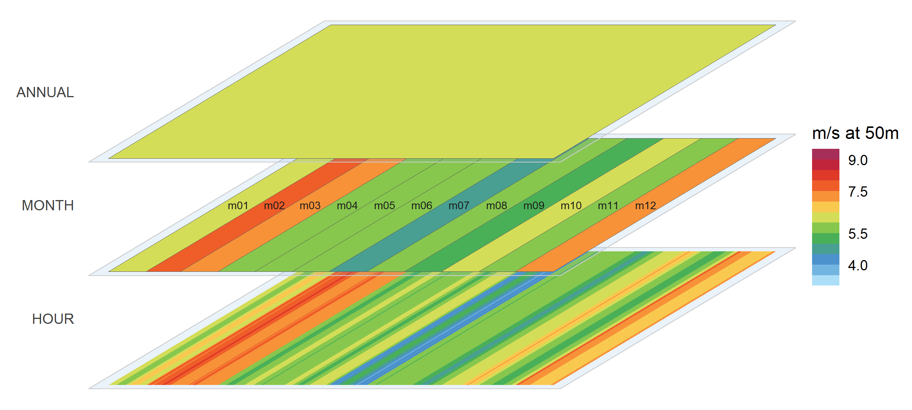
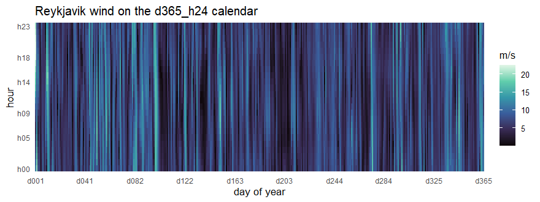
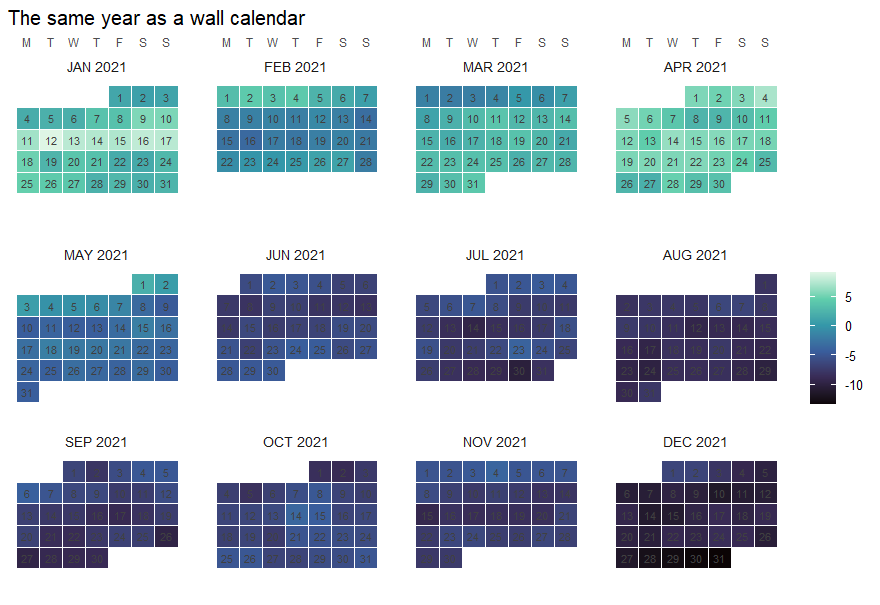

Overview
timescales provides nested timeframes and calendars for optimization and simulation models: organize the time dimension of your model data, convert it between resolutions, and see every level at once.
-
calendar()builds aCalendar— ordered timeframes, their members, and one leaftable row per timeslice with duration-proportional shares; 43 curated designs, fromd365_h24to typical-period compressions and fiscal years, ship pre-built incalendars. -
join_calendar()decorates a table keyed by timeslices with the calendar’s label and share/weight columns — your tables stay tables (data.frame, tibble, data.table, dtplyr/arrow in; the same class out). -
recast_calendar()converts values between any two calendars — one rule per value column, totals conserved, up or down. -
filter_calendar()andprune_calendar()carve partial-year samples and coarser designs for model runs. -
geom_calendar(),calendar_autoplot()and friends draw any level: heatmaps, wall calendars, icicles, and axonometric stacks.
timescales is the time-domain package of the optimal2050 modeling stack; its spatial companion, geoscales, shares the same design and vocabulary.
If you are new to timescales, the best place to start is the get-started vignette (vignette("timescales")).
Installation
timescales is not on CRAN yet; install the development version from GitHub:
# install.packages("pak")
pak::pkg_install("optimal2050/timescales")Usage
One Calendar, three resolutions of the same year: Reykjavik’s hourly wind (NASA MERRA-2, 2019) on the m12_h24 calendar — the annual mean on top, months in the middle, the full month-by-hour texture at the bottom, every plane on one shared wind-speed scale. Its spatial twin — Iceland’s wind resource on the map — opens the geoscales README.
library(timescales)
library(dplyr, warn.conflicts = FALSE)
cal <- calendars$m12_h24
wind <- merra2_cities |>
filter(city == "Reykjavik") |>
mutate(timeslice = datetime_to_timeslice(datetime, cal)) |>
summarise(W50M = mean(W50M), .by = timeslice)
calendar_autoplot(cal, type = "stack",
data = wind, z = "W50M",
rule = "weighted_mean", year = 2019,
labels = "MONTH",
colour = c("grey35", "grey35", NA), # no borders on the
frame = TRUE, # dense HOUR plane
frame_fill = ggplot2::alpha("#6FA8DC", 0.15)) +
energypal::scale_fill_energy_b(limits = c(3.5, 10)) +
ggplot2::labs(fill = "m/s at 50m")
Datetime data lands on any calendar as one ggplot2 layer — the same wind year at its full 365 x 24 resolution:
library(ggplot2)
rey <- merra2_cities |> filter(city == "Reykjavik")
ggplot(rey) +
geom_calendar(calendar = calendars$d365_h24,
datetime = "datetime", z = "W50M") +
scale_fill_viridis_c(option = "G") +
scale_x_discrete(breaks = calendar_breaks(10)) +
scale_y_discrete(breaks = calendar_breaks()) +
labs(x = "day of year", y = "hour", fill = "m/s",
title = "Reykjavik wind on the d365_h24 calendar") +
theme_calendar()
And a familiar wall calendar is just another calendar design — here the same city’s temperature:
calendar_wall_plot(calendar("m12_md365"), rey, z = "T10M", year = 2019) +
scale_fill_viridis_c(option = "C") +
labs(fill = "degC", title = "Reykjavik temperature as a wall calendar")
Weather data: NASA MERRA-2 reanalysis (Global Modeling and Assimilation Office) — public domain; extracted with merra2ools.
Learning more
- The get-started vignette — build, inspect, convert, visualize, in 5 minutes.
- Types of calendars — the 43-design catalog, from full resolution to typical periods.
- Visualization — heatmaps, wall calendars, profiles, ribbons, and duration curves on real weather data.
- The project site — entry point for all language flavours — and the R reference.
Getting help
timescales is pre-1.0 and APIs may still change between minor versions. Questions, feedback, and bug reports are welcome on the issue tracker; see CONTRIBUTING for the repository layout and the multi-language roadmap.